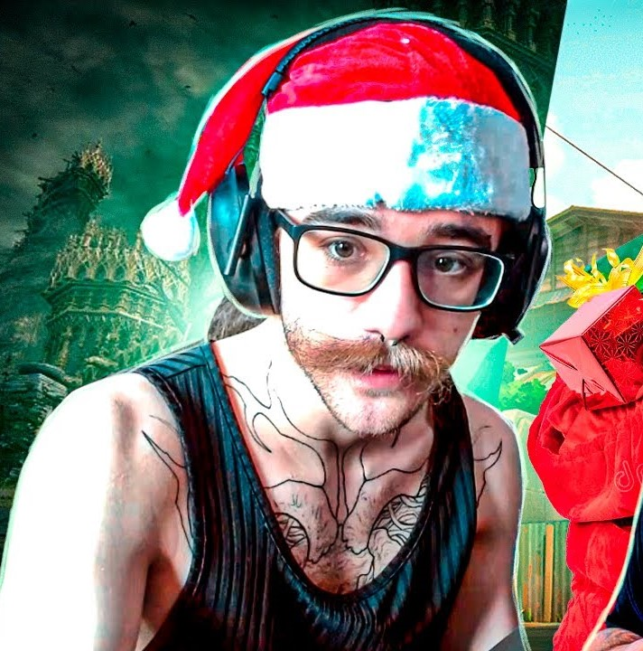

// FUNÇÃO
CONTROLADORA
// BIOGRAFIA
Viper, a química dos Estados Unidos, emprega uma variedade de dispositivos químicos venenosos para controlar o campo de batalha e prejudicar a visão do inimigo. Se as toxinas não matarem a presa, seus jogos mentais certamente o farão.

Coreano / Eduardo
Desde o lançamento do beta do VALORANT, Coreano sempre teve uma agente favorita. Apesar de por muito tempo ter sido considerada a pior personagem do jogo, a Viper era sempre a escolha do streamer durante as partidas. O cara é muito brabo de viper, sabe pixel de lugar que não era pra ser possível, essa gostosa do cabelão é uma lenda.